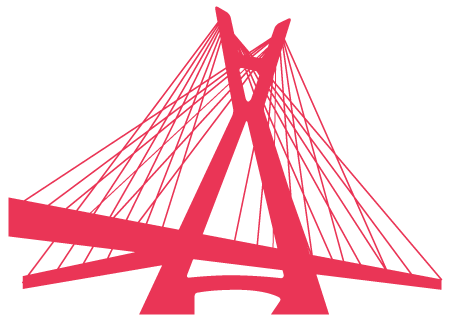

Abrir navegação
Toca
Toca em São Paulo
Toca no Rio de Janeiro
Toca Itinerante
Toca Individual
Toca Grátis

Toca em São Paulo:
Se você quer entrar na Oficina Toca em São Paulo, ela é realizada, uma vez por semana, no Centro Cultural b_arco. Três novas turmas começarão no mês de março de 2017. Saiba mais e faça a sua inscrição acessando o endereço:
http://barco.art.br/
Feito por
br1 Design